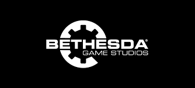
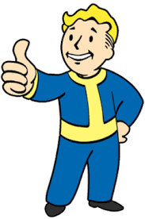

Information about the fallout Universe





Fallout Universe Overview
Fallout is a renowned post apocalyptic role playing game (RPG) franchise characterized by its "atompunk" retro futuristic style,
which blends 1950s Americana with the grim reality of nuclear annihilation. The series was created by Tim Cain and Leonard Boyarsky
at Interplay Entertainment, debuting in 1997.
Origins and Development
Spiritual Successor: Fallout was originally developed as a spiritual successor to Interplay’s 1988 game, Wasteland.
Development Beginnings: Lead programmer Tim Cain began developing the engine in his spare time in 1994,
eventually assembling a team of 15-30 people at Interplay.
GURPS to SPECIAL: Initially, the game was intended to use the Generic Universal RolePlaying System (GURPS).
However, due to disagreements over the game's high level of violence, the team switched to their own system,
called SPECIAL (Strength, Perception, Endurance, Charisma, Intelligence, Agility, Luck).
Influences: The game was heavily influenced by 1950s atomic age culture, as well as films like Mad Max 2 (1981) and A Boy and His Dog (1975).
Company History and Creators:
Interplay Entertainment (1997–2004): Created the original Fallout (1997) and Fallout 2 (1998) through their division,
Black Isle Studios.
Bethesda Softworks (2004–Present): Purchased the intellectual property rights for $5.75 million in 2007,
releasing Fallout 3 in 2008 and all subsequent main entries.
Key Creators: Tim Cain (creator/lead programmer), Leonard Boyarsky (art director), and Chris Taylor (designer).
Other Developers: Obsidian Entertainment developed Fallout: New Vegas (2010), while Micro Forté handled Fallout Tactics.
Core Lore and Setting:
The Fallout universe is defined by a "divergence"—a point where the timeline splits from real-world history,
following a 1950s vision of the future where computers remained bulky, and atomic power was integrated into daily life.
The Great War (October 23, 2077): A massive, two hour nuclear exchange between the United States and China over dwindling resources.
Vault-Tec Corporation: A corrupt pre-war defense company that built underground shelters (Vaults). These were rarely intended
to save people; instead, they were used to conduct unethical experiments on residents.
The Wasteland: The post-apocalyptic surface world populated by survivors, mutants, and robots, often featuring a dark, satirical tone.
Key Entities:
Brotherhood of Steel: A paramilitary group dedicated to preserving pre-war technology.
The Enclave: A remnant of the pre-war US government.
Super Mutants: Humans exposed to the Forced Evolutionary Virus (FEV).
Main Game Series:
• Fallout (1997): Set in 2161, Southern California
• Fallout 2 (1998): Set in 2241, Southern California
• Fallout 3 (2008): Set in 2277, Washington D.C.
• Fallout: New Vegas (2010): Set in 2281, Mojave Wasteland
• Fallout 4 (2015): Set in 2287, Boston
• Fallout 76 (2018): Set in 2102, West Virginia